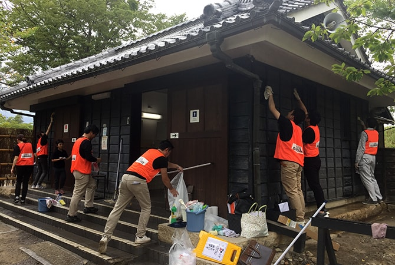

地域の一員として
世界中で事業を展開するLIXILは、日本国内だけでも140以上の生産・営業拠点があります。それぞれの拠点では、事業を営む地域に根差すことを大切にし、地域社会の一員として、様々な活動に取り組んでいます。
各地域には、そこにしかない歴史や文化、自然があり、そこで暮らす人々がいます。LIXILは、商品やサービスを通じたビジネスの視点だけでなく、地域の課題を市民の皆さまと対話し、一緒に考え、解決していきたいと考えています。各地の従業員たちが、市民の皆さまと語り合い、協働しながら、一人ひとりが身近にできることにチャレンジする取り組みについてご紹介します。
コミュニティ・ダイアログ
 工場や営業などの各拠点では、地域の皆さまと従業員が対話する「コミュニティ・ダイアログ」を開催しています。地域の防災や教育、環境、まちづくりといった幅広い分野で、自治体や自治会、NPO、教育機関などの皆さまと意見交換し、LIXILができることを考え、実践しています。
工場や営業などの各拠点では、地域の皆さまと従業員が対話する「コミュニティ・ダイアログ」を開催しています。地域の防災や教育、環境、まちづくりといった幅広い分野で、自治体や自治会、NPO、教育機関などの皆さまと意見交換し、LIXILができることを考え、実践しています。
詳細はこちら >
LIXILコミュニティデー
 世界各国のLIXIL従業員が一斉に社会貢献活動を行う「LIXILコミュニティデー」。3年目となる2019年には、33カ国で前年の2倍以上にあたる約15,000人が参加しました。コーポレート・レスポンシビリティ戦略の3つの優先課題を軸に、地域の清掃、子どもたちへの出前授業、リサイクル活動など様々な活動に取り組みました。
世界各国のLIXIL従業員が一斉に社会貢献活動を行う「LIXILコミュニティデー」。3年目となる2019年には、33カ国で前年の2倍以上にあたる約15,000人が参加しました。コーポレート・レスポンシビリティ戦略の3つの優先課題を軸に、地域の清掃、子どもたちへの出前授業、リサイクル活動など様々な活動に取り組みました。
詳細はこちら >
地域との協働
LIXILの各拠点では、地域の自治体や教育機関、NPOなど様々なステークホルダーの皆さまと協働しながら、地域貢献活動に取り組んでいます。四国から全国へ広がる観光地トイレ清掃、香川支店で開催された復興支援イベント、横浜支店協賛の「環境絵日記」、佐賀の出前講座などについて紹介します。
詳細はこちら >